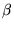

B.E. Computer Engineering, VES Institute of Technology, Mumbai, India. Aug 1997 - Aug 2001. Score 68% (Top 5%)
DBF (,)-Diploma in Business Finance-part Time, ICFAI,Hyderabad, India. June 2000 -onwards. Score 60% (Top 10%)